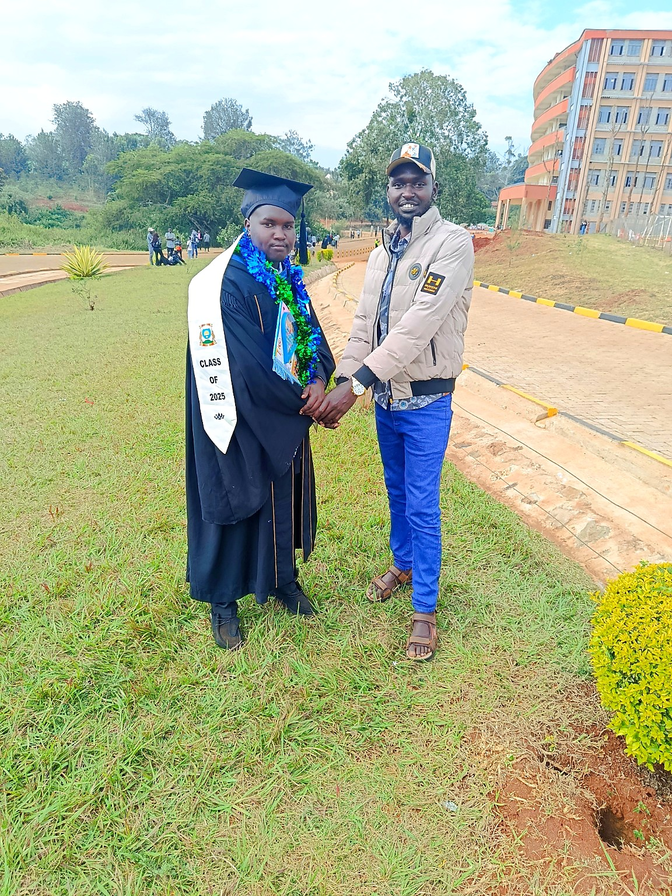
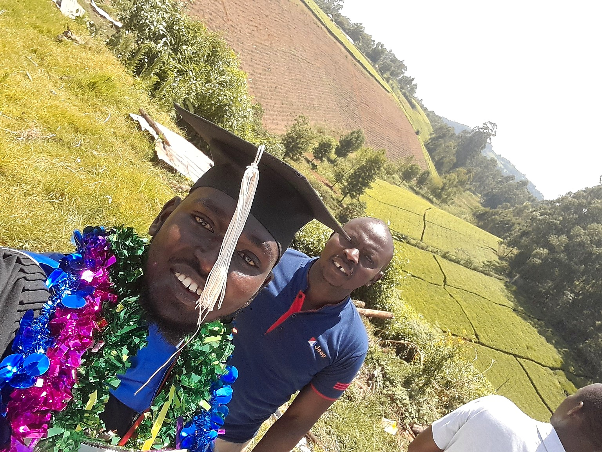
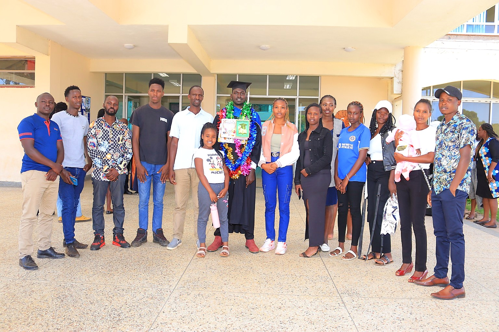
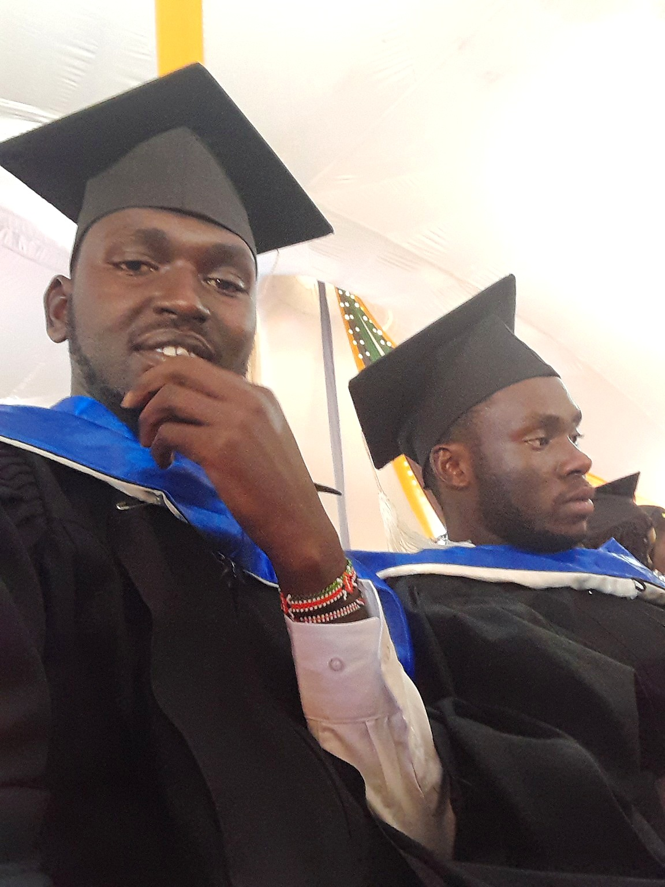
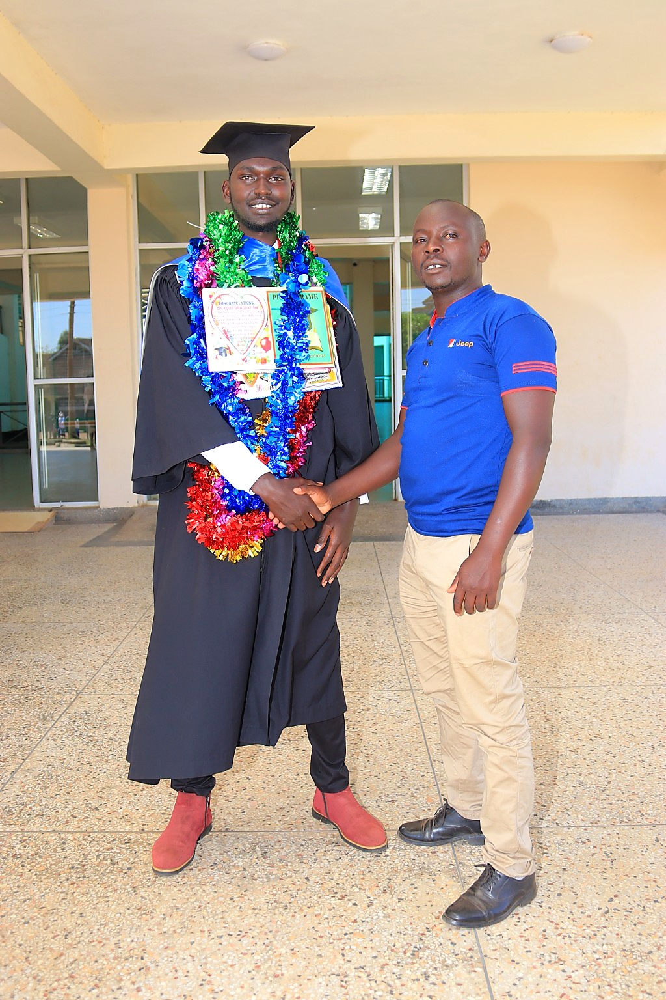

About Kipngetich Generally
Gilbert Kipngetich Langat, publicly known as Kipngetich Generally, is a Kenyan Information Technology graduate with a strong passion for ICT, innovation, digital transformation and technology for development.
He was born in Morombo Village, Embomos Ward, Konoin Constituency, Bomet County, Kenya. His journey has been shaped by education, leadership, work experience and community engagement. He is passionate about exploring how digital tools and innovative ideas can address everyday challenges, strengthen organisations and support sustainable development.
He graduated from Karatina University in 2024 with a Bachelor of Science in Information Technology. His interests include digital systems, emerging technologies, data and information management, technology-driven solutions and the responsible use of ICT.
Public Name
Kipngetich Generally
Full Name
Gilbert Kipngetich Langat
Home
Morombo Village, Bomet County, Kenya
Professional Identity
ICT, Innovation and Digital Transformation
Education
Karatina University
Bachelor of Science in Information Technology
Graduated in 2024
Cheborgei Boys High School
Secondary education in Kericho County. Served in student leadership, including as School President and a member of the school board.
Kimugul Primary School
Continued primary education after relocating to Majani Mingi, Lomolo A, in the Rongai–Mogotio area, and completed Class Eight.
Chebugen Primary School
Where he began his primary education in Bomet County.
Professional Experience
A range of work and practical experiences across technology support, public service, electoral processes and industry.
County Government of Bomet
ICT Support – Attachment
Gained practical exposure to ICT support and technology services in a county government environment.
Independent Electoral and Boundaries Commission (IEBC)
Polling Clerk | 2022
Supported the electoral process in a polling-station role, contributing to the administration of the election.
Kobel Tea Factory
General Worker
Gained workplace experience and developed practical skills in teamwork, responsibility and completing assigned duties.
Dandelion Africa
Community Engagement – FGM Awareness
Participated in efforts to fight female genital mutilation (FGM) and promote community awareness while in the Kimugul Primary School period.
Leadership & Community Engagement
Community service and leadership have been meaningful parts of Kipngetich’s journey. During his education, he took part in school leadership and co-curricular activities and later served as School President and a member of the board at Cheborgei Boys High School.
He also participated in community efforts with Dandelion Africa focused on fighting FGM. These experiences strengthened his appreciation for awareness, collaboration, responsibility and the importance of working with communities to address social challenges.
He remains interested in initiatives that use knowledge, technology and innovation to support community development, education and better access to opportunities.
ICT, Innovation & Digital Interests
His professional interests are centred on applying technology in practical and meaningful ways.
Information & Communication TechnologyInnovationDigital TransformationTechnology for DevelopmentDigital SolutionsData & Information ManagementEmerging TechnologiesCommunity DevelopmentHe is enthusiastic about continuous learning, exploring new digital possibilities and contributing to solutions that make services more accessible, efficient and impactful.
Photo Gallery
A collection of graduation and milestone photographs.





Connect & Follow
Follow Kipngetich Generally through these public profiles.